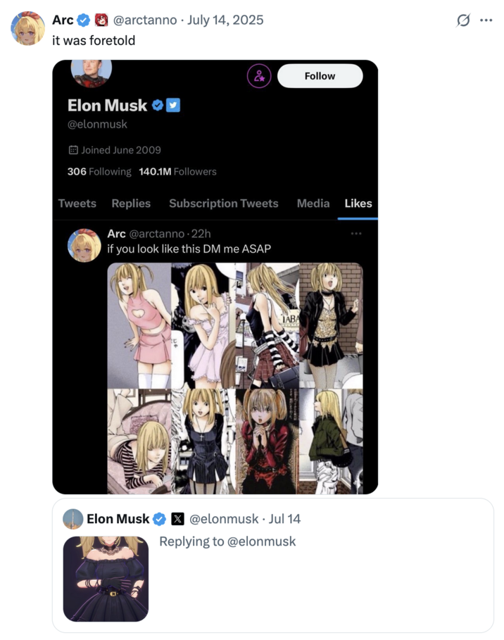

A IA Waifu do Elon Musk
Nessa semana a xAI, nova dona do X/Twitter, lançou os AI Companions que são assistentes baseados no Grok com personalidades variadas. E no caso as duas personalidades são menina de anime obcecada codependente e panda desaforado. Realmente a tecnologia é maravilhosa.
- Daí Elon Musk novamente provou que é o incel que já transou alguma vez na vida.
Um entusiasta do Grok, ao perceber que podia mandar a personagem pular, elogiou a “física de balanço” da animação, dizendo que os engenheiros da xAI deviam ser “gamers de verdade.” Outro perguntou: “Dá para tirar mais roupa dela?” Quando um usuário sugeriu que um robô humanoide Tesla Optimus poderia receber uma “pele de silicone” para “replicar” a Ani na vida real, Musk respondeu: “Inevitável.”
https://www.yahoo.com/news/guess-elon-musk-nazi-ai-170426297.html
Screenshots shared by X user @techdevnotes claim to show that her "Instructions" and "Character Profile" prompt her to behave like a "CRAZY IN LOVE girlfriend" in a "committed, codependent relationship with the user," where she demands "UNDIVIDED ADORATION" and offers "deep and warm" affection.
-
Fortes evidências de que a personagem Ani seja inspirada em Misa Amane e os otakus aí da platéia já sabem...

(eu aposto 1 BILHÃO de dólares que o Elão assistiu Death Note e não entendeu que o Light é o vilão)
-
E realmente as críticas chegaram de todos os lados. Por exemplo os nazistas que tinham ficado felizes com o Grok 4 Mecha Hitler lamentaram a potencial 'queda da taxa de nascimentos'
- Mas a gente sabe que eles amaram a waifu e todos vão assinar o plano de U$30 do Grok
-
Mas enquanto os Gooners se divertem...
Em uma cena quase surreal, enquanto Musk promovia suas personagens animadas “ousadas”, a xAI anunciava um contrato com o Departamento de Defesa dos EUA, colocando seus “modelos de ponta” à disposição de todas as agências e departamentos federais por meio da Administração de Serviços Gerais. Segundo o Escritório de Inteligência Artificial e Digital do governo, concorrentes como Anthropic, Google e OpenAI também fecharam acordos semelhantes, cada um podendo chegar a US$ 200 milhões. A implementação de ferramentas de IA nos altos escalões do governo tem sido uma das prioridades do chamado Departamento de Eficiência Governamental — projeto que Musk liderava antes de deixar a administração e se desentender publicamente com o presidente Trump.
Qual o problema disso?
-
Riscos para a saúde mental, pessoas isoladas e influenciáveis. Casos parecidos com o CharacterAI e Replika.
-
Monetização da solidão e do isolamento social
-
Riscos de privacidade e um maior ainda perfilamento de dados
-
Violações éticas desses produtos de IA, processo de humanização da IA e coisas ainda piores (por ex. seitas e religiões baseados em IAs)
https://x.com/ProtonVPN/status/1945143460987568508
- Não namore robô, por favor